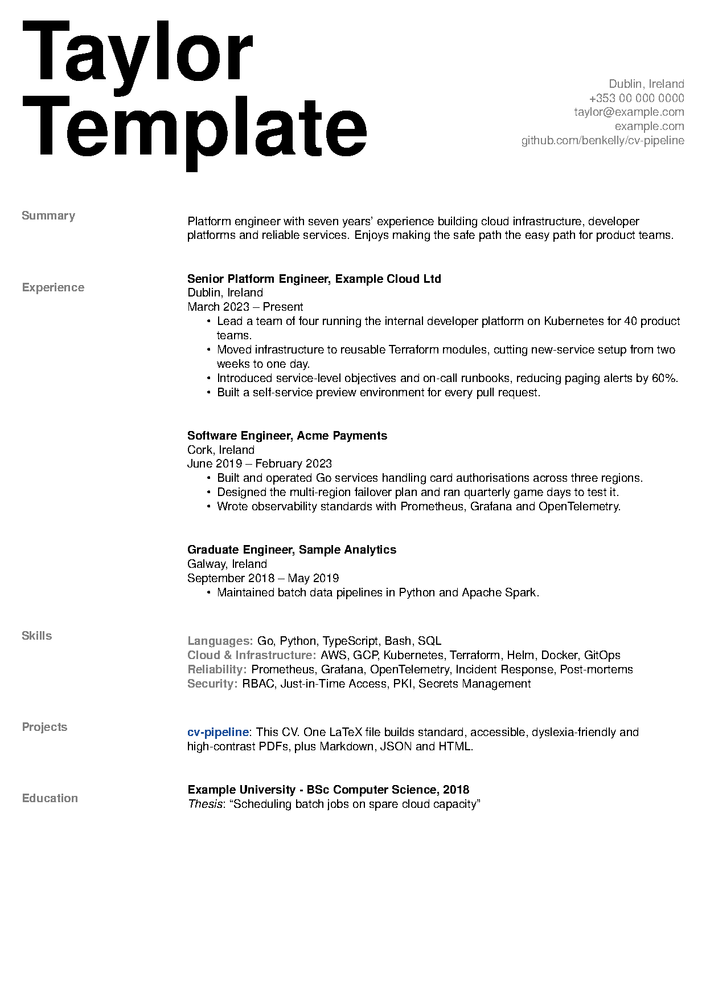

CV builds

CV
- StandardThe standard CV.
- PublicPublic contact details, no phone number.
- PrintGreyscale, for printing.
- ArchivePDF/A-2b, for long-term storage.
Accessible versions
- AccessibleLarger line spacing, darker text, clear headings.
- Dyslexia-friendlyThe accessible layout in the OpenDyslexic font.
- High contrastYellow text on black.
- Dyslexia-friendly, high contrastOpenDyslexic, yellow on black.
Cover letter
- Cover letterThe letter on its own.
- Cover letter and CVBoth in one PDF.
For software and AI tools
- MarkdownGenerated from the LaTeX source, in reading order.
- JSONSections, roles, highlights and links.
- HTMLA plain web page that follows dark mode.
- Cover letter, MarkdownThe letter as text.